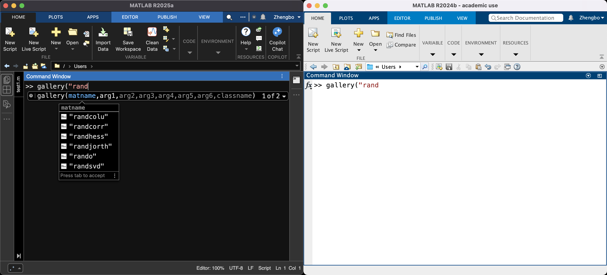
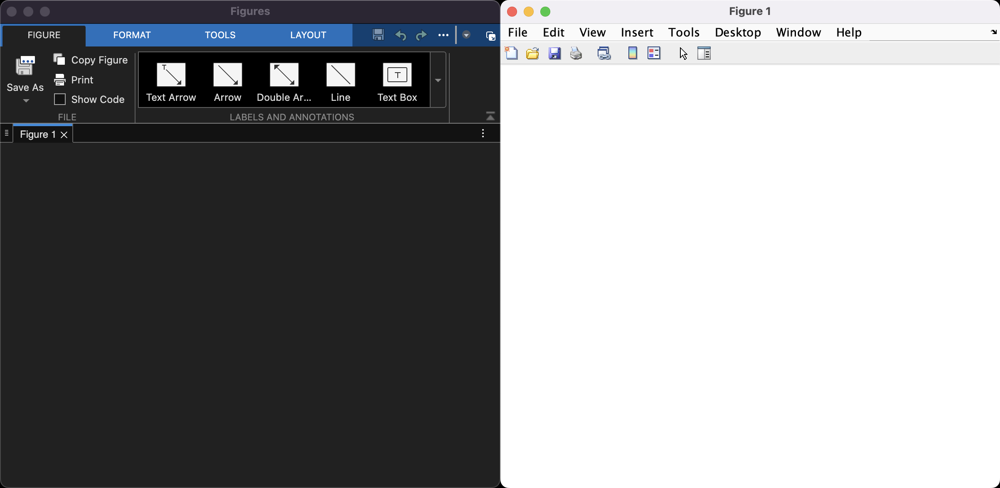

What's new in MATLAB R2025a
MATLAB R2025a was officially released on May 15, 2025, which is delayed by the finalization process.
In this post, I will present several updates which has been made in MATLAB R2025a. For a detailed list of changes, please refer to the official MATLAB R2025a release notes.
Renewed user interface
- The renewed MATLAB desktop is designed to improve productivity and streamline workflows. In particular, the sidebar can now show more panels than previous versions, for example, a dedicated source control panel.
- The dark UI which has been tested since version MATLAB R2023a via the package New Desktop for MATLAB (Beta), is now available in MATLAB desktop.
- MATLAB preferences are now renamed as settings, and you can search for and modify these settings using the updated Settings window.
- The command window now supports auto-completion, which used to work only for the editor.

Notice that the MATLAB window on the left uses dark UI. - One can view and create figures in dark theme as well. By default, figures use the theme of MATLAB desktop (light/dark).
Improved editor
- Now, the editor supports previewing Markdown files. As you make edits to the file, the Editor updates the preview automatically.
- Some recurring code structures, such as the
if-elsestatement can be inserted using code snippets. However, the user is not able to create their own snippets at this version. - One can now copy a line of code in the Editor without selecting the code. To copy a line, use
Ctrl+L(WIN) orCommand+C(MAC). To cut a code line, useCtrl+X(WIN) orCommand+X(MAC). - Figures now open as tabs in a figure container

MATLAB R2025a is shown on the left with dark UI and MATLAB R2024b is shown on the right.
Read data from compressed and archived files
Since R2025a, archived file formats are treated as folders. Suppose you have an archived zip file called data.zip with
data1.csv and data2.csv inside the zip file. Now, you can import the data from data1.csv via
A = readmatrix("data.zip/data1.csv");
However, there seems to be no auto-completion for data1.csv since it is, in theory, not in your search path. There are other functions, besides readmatrix, that also support this functionality; see here for a detailed list.
Sparse matrix is supported in single precision
Single precision sparse matrices are now supported in all functions that support double precision sparse matrices. A straightforward example is
>> % In MATLAB R2024b
>> A = sparse(randn(10,1)); single(A)
Error using single
Attempt to convert to unimplemented sparse type
>> % In MATLAB R2025a, it will create a single precision sparse matrix
>> A = sparse(randn(10,1)); single(A)
ans =
10×1 sparse single column vector (10 nonzeros)
(1,1) -1.4150e+00
(2,1) -3.3356e-02
(3,1) 2.6112e-01
(4,1) 5.2299e-01
(5,1) 6.7679e-01
(6,1) 6.7440e-01
(7,1) 6.7840e-01
(8,1) -3.1258e-01
(9,1) 3.7924e-01
(10,1) -2.2529e+00
Other possibilities such as creating a 50-by-100 single precision sparse matrix with density 0.1 using sprand(50,100,0.1,"single") are also supported. See here for more usage.
ode supports more objects
odecan solve delay differential equations (DDEs) by specifying theSolverproperty as"dde23","ddesd", or"ddensd"and specifying theDelayDefinitionproperty as anodeDelayobject. If the user only specifiesDelayDefinition, thenodeautomatically selects a solver.odecan solve ordinary differential equations (ODEs) with complex solution values by specifyingSeparateComplexPartsas"on". This is useful for solving implicit and stiff ODEs where the Jacobian is not specified.
MATLAB Copilot
One can now work with Copilot inside MATLAB desktop. Now, there is a dedicated sidebar panel for Copilot chat, which can answer questions, help write and explain code, and identify code issues. Thanks to MATLAB's super detailed documentation and the technical articles, Copilot can make use of them and provide reasonable and meaningful skeleton codes. By pressing Shift+Command+P (MAC) or Shift+Ctrl+P (WIN) in the Editor, one can directly ask Copilot to generate some code for you without needing to copy and paste from the Copilot chat.
After experiencing this for several days, I think Copilot integration is particularly useful for starters to become familiar with MATLAB syntax. For experienced users, it brings no significant benefit since MATLAB Copilot is usually not smart enough to generate code with desired functionalities. I wish to see more improvements when MATLAB Copilot can work with AI models that are good at “reasoning”, e.g. ChatGPT 4o-mini.